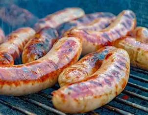
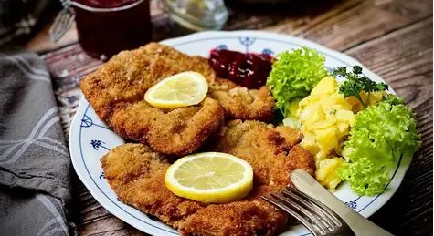
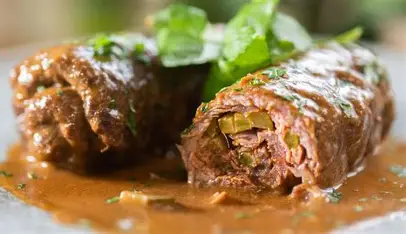

Plato principal
Bratwurst
Salchicha asada típica alemana.
Es una salchicha elaborada principalmente con carne de cerdo (a veces mezclada con
ternera o res). Normalmente se sirve asada a la parrilla y se
acompaña con pan, mostaza y, en ocasiones, chucrut.
Se come: en ferias, mercados y puestos callejeros.
Dato: cada región tiene su versión con tamaño y sazón diferentes.
Acompañamiento
Sauerkraut con papas
Repollo fermentado con guarnición de papa.
El Sauerkraut es col blanca finamente picada y fermentada, lo que
le da un sabor ácido muy característico. Se suele servir caliente junto con papas hervidas
o en puré y alguna carne, como salchichas o cerdo.
Se come: como guarnición clásica.
Dato: la fermentación ayuda a conservar el alimento y aporta probióticos.

Plato principal
Schnitzel
Filete empanizado y frito.
Consiste en un filete delgado (generalmente de cerdo o ternera) empanizado y frito
hasta quedar crujiente. Se sirve con papas fritas, ensalada o puré de papas, y es un
platillo muy popular en restaurantes y hogares.
Se come: como comida fuerte del día.
Dato: aunque es famoso en Austria, también es muy común en Alemania.
Pan tradicional
Brezel (Pretzel)
Pan en forma de lazo con costra dorada.
Es un pan suave con una corteza ligeramente crujiente y un toque salado en la superficie.
Es típico de la región de Baviera y suele acompañar la cerveza o servirse como snack
en festivales.
Se come: en Oktoberfest, panaderías y bares.
Dato: su forma de lazo es un símbolo muy reconocido de Alemania.
Comida rápida
Currywurst
Salchicha con salsa de curry y tomate.
La Currywurst es una salchicha cortada en trozos y bañada con una salsa a base de
kétchup y curry en polvo. Es uno de los platillos callejeros más
populares de Alemania, especialmente en Berlín.
Se come: como comida rápida, sola o con papas fritas.
Dato: existen puestos dedicados casi exclusivamente a vender Currywurst.
Ensalada
Kartoffelsalat
Ensalada de papa al estilo alemán.
Esta ensalada se prepara con papas cocidas, cebolla y aderezos que pueden variar:
algunas versiones llevan vinagre y aceite, y otras se preparan con
mayonesa. Es un acompañamiento típico de carnes y salchichas.
Se come: en comidas familiares, picnics y fiestas.
Dato: cada familia suele tener su receta propia de Kartoffelsalat.

Guiso
Rouladen
Rollos de carne rellenos.
Los Rouladen son láminas de carne de res enrolladas y rellenas de tocino,
pepinillos, mostaza y cebolla. Se cocinan lentamente en salsa hasta quedar
muy suaves y jugosos.
Se come: como platillo principal en comidas especiales.
Dato: se suele acompañar con papas y col roja.

Postre
Pastel Selva Negra
Schwarzwälder Kirschtorte.
Es un pastel de capas de bizcocho de chocolate, crema batida y cerezas.
Generalmente lleva un poco de licor de cereza y se decora con virutas de chocolate.
Se come: en celebraciones y cafeterías.
Dato: recibe su nombre de la región de la Selva Negra (Schwarzwald).

Postre
Apfelstrudel
Strudel de manzana.
Es un rollo de masa muy fina relleno de manzana, canela, azúcar y a veces nueces o pasas.
Se sirve caliente y muchas veces acompañado de helado o salsa de vainilla.
Se come: como postre o merienda.
Dato: es típico de la zona de habla alemana, incluyendo Austria.

Dulce navideño
Lebkuchen
Galletas de especias típicas de Navidad.
Los Lebkuchen son galletas suaves preparadas con miel, frutos secos y una mezcla de
especias como canela, clavo y nuez moscada. Son muy tradicionales durante el
Adviento y la Navidad en Alemania.
Se come: en mercados navideños y en casa con café o té.
Dato: algunas versiones se cubren con chocolate o glaseado de azúcar.